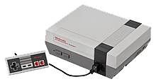
Super Nintendo Entertainment System - 1991
Nintendo 64 - 1996
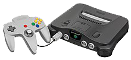
GameCube - 2001
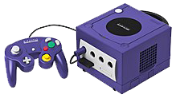
Wii - 2006

Wii U - 2012
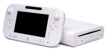
Switch - 2017
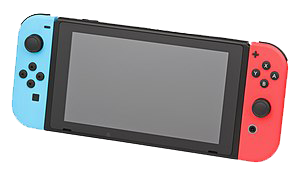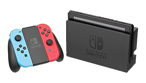
Nintendo Entertainment System - 1985
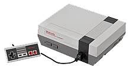
Super Nintendo Entertainment System - 1991
Nintendo 64 - 1996
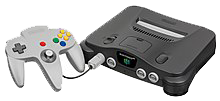
GameCube - 2001
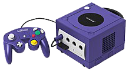
Wii - 2006
Wii U - 2012
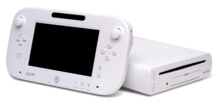
Switch - 2017
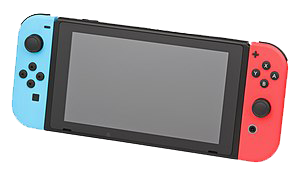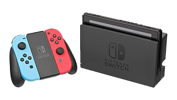
Gameboy - 1989
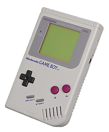
Gameboy Pocket - 1996
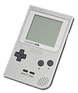
(Japan Only) Gameboy Light - 1998
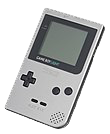Japan Only Gameboy Light" width="125" height="150">
Gameboy Color - 1998
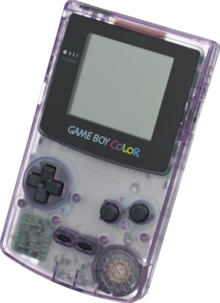
Gameboy Advance - 2001
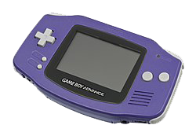
Gameboy Advance SP - 2002
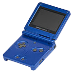
Gameboy Micro - 2005

Virtual Boy - 1995
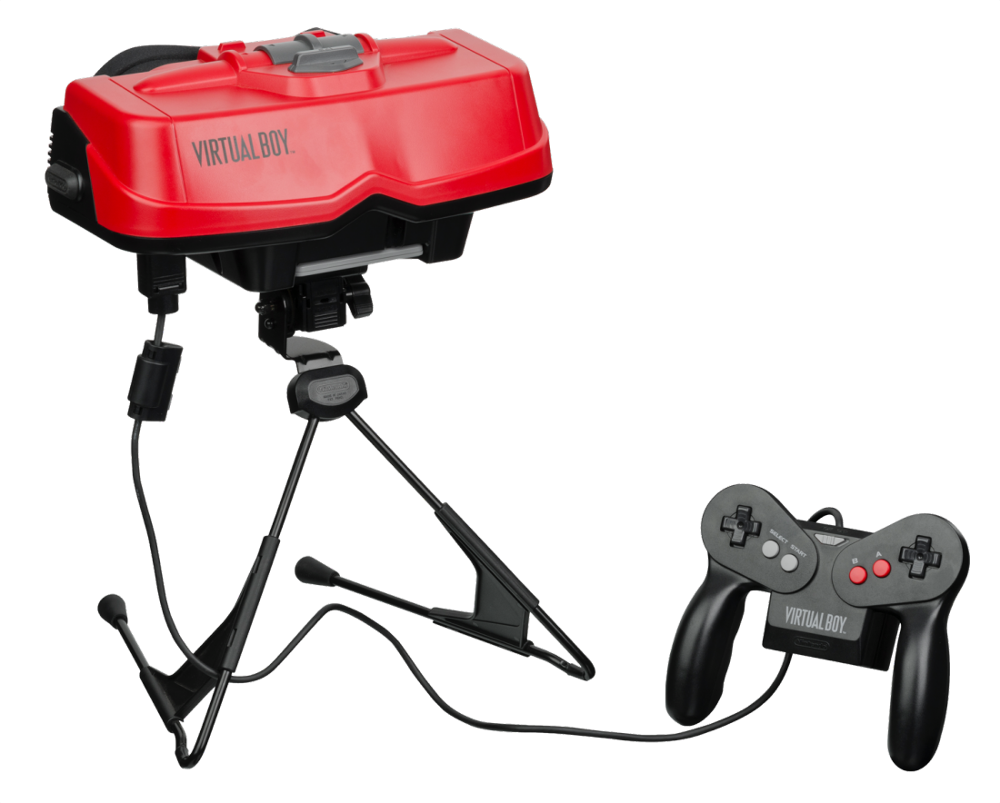
DS - 2004
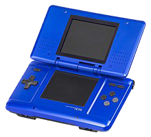
DS Lite - 2006
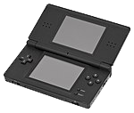
DSi - 2008
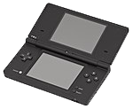
DSi XL - 2009
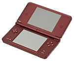
3DS - 2011
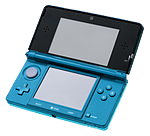
3DS XL - 2012
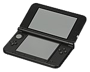
2DS - 2013
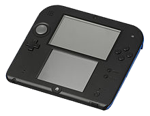
New Nintendo 3DS - 2014
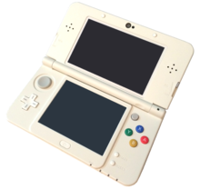
New Nintendo 3DS XL - 2014
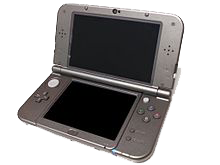
New Nintendo 2DS XL - 2017
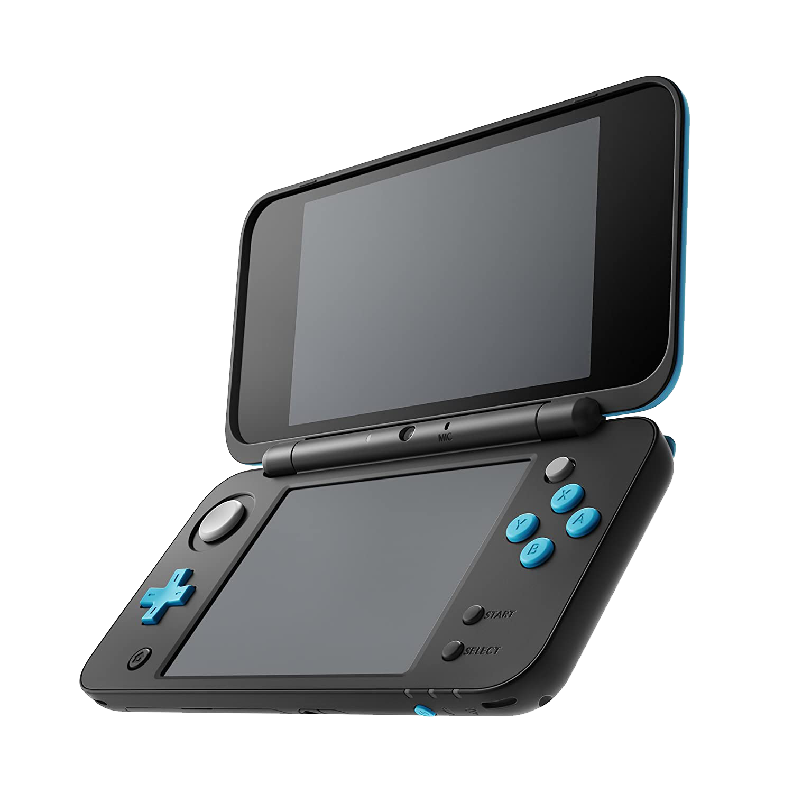
Silver Series - 1980

Gold Series - 1981

Wide Screen Series - 1982

Multi-Screen Series - 1982


New Wide Screen Series - 1982

Tabletop Series - 1983

Panorama Series - 1983

Super Color Series - 1984

Micro Vs. Series - 1984

Crystal Screen Series - 1986

Club Nintendo Game & Watch "Ball" Rerelease - 2010

Game & Watch Super Mario Bros. (For Mario's 35th Anniversary) - 2020

Game & Watch The Legend of Zelda (For The Legend of Zelda's 35th Anniversary) - 2021
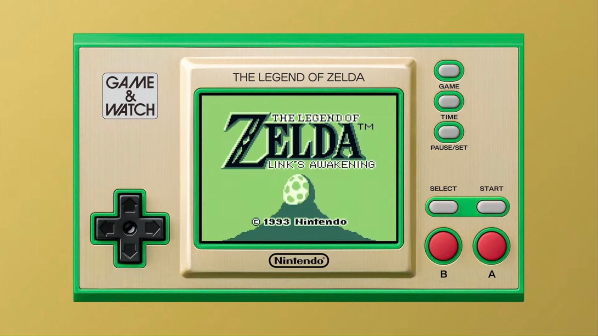
The Game & Watch Silver Series began with Ball on April 28th, 1980 and ended with Judge on October 4th, 1980.
The Game & Watch Gold Series began with Manhole on January 29th, 1981 and ended with Lion on April 29th, 1981.
The Game & Watch Wide Screen Series began with Parachute on June 19th, 1981 and ended with Snoopy Tennis on April 28th, 1982.
The Game & Watch Multi-Screen Series began with Oil Panic on May 28th, 1982 and ended with Zelda on August 26th, 1989.
The Game & Watch New Widescreen Series began with Donkey Kong Jr. on October 26th, 1982 and ended with Mario the Juggler
on October 14th, 1991.
The Game & Watch Tabletop Series began with Donkey Kong Jr. on April 28th, 1983 and ended with Popeye on August 17th, 1983.
The Game & Watch Panorama Series began with Snoopy on August 30th, 1983 and ended with Donkey Kong Circus on March 2th, 1984.
The Game & Watch Super Color Series began with Spitball Sparky on February 6th, 1984 and ended with Crab Grab on February 20th, 1984.
The Game & Watch Micro VS. Series began with Boxing on July 31th, 1984 and ended with Donkey Kong Hockey on November 13th, 1984.
The original Nintendo Entertainment System released on October 8th, 1985. It sold 60,000,000 units worldwide. The 5 best selling games are
Super Mario Bros. (1985), Duck Hunt (1984), Super Mario Bros. 3 (1988), Tetris (1989), & Super Mario Bros. 2 USA(1988).
The Game & Watch Crystal Screen Series began with Super Mario Bros. on June 25th, 1986 and ended with Balloon Fight on November 19th, 1986.
The original Gameboy released on July 31st, 1989; according to some sources. I couldn't get any concrete info. Nintendo of America said July 31st, 1989, and Wikipedia says September 1989, no day given. Two revised models, the Gameboy Pocket & the Gameboy Light released on September 3rd, 1996 in North America and on April 14, 1996 in Japan only respectively. Moving on, all sources group these three with the Gameboy Color. These 4 systems sold 120,000,000 units worldwide. The 5 best selling games (for these three) are Tetris (1989), Pokémon Red, Green, & Blue (1996), Super Mario Land (1989), Pokémon Yellow (1998), & Super Mario Land 2: 6 Golden Coins (1992).
The original Super Nintendo Entertainment System released on September 9th, 1991. It sold units worldwide. . The 5 best selling games are Super Mario World (1990), Super Mario All-Stars (1993), Donkey Kong Country (1994), Super Mario Kart (1992), & Street Fighter II: The World Warrior (1992). Interestingly enough, all five of these games were at some point bundled with the SNES.
The Virtual Boy released on August 14th, 1995. It sold 770,000 units worldwide. It had 22 games, those being 3D Tetris, Galactic Pinball, Golf, Innsmouth no Yakata (Japan Only), Jack Bros., Mario Clash, Mario's Tennis, Nester's Funky Bowling, Panic Bomber, Red Alarm, SD Gundam Dimension War, (Japan Only), Space Invaders Virtual Collection (Japan Only), Space Squash (Japan Only), Teleroboxer, V-Tetris (Japan Only), Vertical Force, Virtual Bowling (Japan Only), Virtual Boy Wario Land, Virtual Fishing (Japan Only), Virtual lab (Japan Only), Virtual League Baseball, & Waterworld. All 22 games released between the Virtual Boy's launch and August 14th, 1996.
The Nintendo 64 released on September 29th 1996. It sold 32,930,000 units worldwide. The 5 best selling games are Super Mario 64 (1996), Mario Kart 64 (1996), GoldenEye 007 (1997), The Legend of Zelda: Ocarina of Time (1998), & Super Smash Bros. (1999).
The Gameboy Color released on November 18th, 1998. All sources group it with the Original Gameboy, the Light, & the Pocket. These 4 systems sold 120,000,000 units worldwide. The 5 best selling games for the Gameboy Color are Pokémon Gold & Silver (1999), Pokémon Crystal (2000), Pokémon Pinball (1999), Super Mario Bros. Deluxe (1999), & The Legend of Zelda: Oracle of Seasons and Oracle of Ages (2001).
The Gameboy Advance released on June 11th, 2001, with the SP model, meaning special, releasing the following year on March 23, 2003. The end of the Gameboy Advance line, as well as the end of the Gameboy lineage as a whole, the Gameboy Micro, released on September 19th, 2005. These 3 systems sold 81,000,000 units worldwide. The 5 best selling games are Pokémon Ruby and Sapphire (2002), Pokémon FireRed and LeafGreen (2004), Pokémon Emerald (2004), Mario Kart: Super Circuit (2001), & Super Mario World: Super Mario Advance 2 (2001).
The Pokemon Mini released on November 16th, 2001. It contained a clock and was the smallest handheld ever made to use cartridges, weighing 71 grams. The 10 games released for it are Pichu Bros. (Japan Only), Pokémon Breeder mini (Japan Only), Pokémon Party mini, Pokémon Pinball mini, Pokémon Puzzle Collection, Pokémon Puzzle Collection vol. 2 (Japan Only), Pokémon Race mini (Japan Only), Pokémon Tetris (Japan & Europe Only), Pokémon Zany Cards, & Togepi's Great Adventure (Japan Only).**
The Gamecube released on November 18th, 2001. It sold units 22,000,000 worldwide. The 5 best selling games are Super Smash Brothers Melee (2001), Mario Kart: Double Dash!! (2003), Super Mario Sunshine (2002), The Legend of Zelda: The Wind Waker (2002), & Luigi's Mansion (2001).
The Original DS released on released on November 21st, 2004. It, combined with the DS Lite, DSi, & DSi XL, sold 154,020,000 units worldwide. The 5 best selling games are New Super Mario Bros. (2006), Nintendogs (2005)***, Mario Kart DS (2005), Brain Age: Train Your Brain in Minutes a Day! (2005), & Pokémon Diamond and Pearl (2006).
The released on , . It sold units worldwide. . The 5 best selling games are ,Wii Sports (2006) Mario Kart Wii (2008), Wii Sports Resort (2009), New Super Mario Bros. Wii (2009), & Wii Play 2006. Interestingly, the four best selling games all came bundled with the Wii at some point, with Wii Play just at number 5 not being bundled.
The released on , . It sold units worldwide. The DSi had only 3 exclusive retail games, those being System Flaw, Foto Showdown, & Hair Salon.
The released on , . It sold units worldwide. The 5 best selling games are Mario Kart 7 (2011), Pokémon X and Y (2013), Pokémon Sun and Moon (2016), Pokémon Omega Ruby and Alpha Sapphire (2014), & New Super Mario Bros. 2 (2012).
The released on , . It sold units worldwide. . The 5 best selling games are Mario Kart 8 (2014), Super Mario 3D World (2013), New Super Mario Bros. U (2012), Super Smash Bros. for Wii U (2014), & Nintendo Land (2012). As with the SNES, all five games listed were at some point bundled with the Wii U.
The released on March 3rd, 2017. It has sold 101,880,000 units worldwide as of January 2022. The 5 best selling games as of January 2022 are Mario Kart 8 Deluxe (2017), Animal Crossing: New Horions (2020),Super Smash Bros. Ultimate (2018), The Legend of Zelda: Breath of the Wild (2017), & Super Mario Odysse (2017).